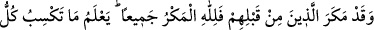
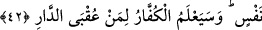

değiştirmek hiç kimse için mümkün değildir.
42. Onlardan öncekiler de (peygamberlerine) tuzak kurmuşlardı; halbuki bütün
tuzaklar Allah’a aittir. Çünkü O, herkesin ne kazandığını bilir. kâfirler de bu
yurdun (dünyanın) sonunun kimin olduğunu yakında bileceklerdir.
“Onlardan öncekiler de (peygamberlerine) tuzak kurmuşlardı;” Bu söz, Hz.
Peygamber’i teselli etmek içindir. Yani, Mekkeliler Hz. Muhammed (a.s.)’a tuzak
kurdukları gibi onlardan öncekiler de peygamberlerine ve onlara inananlara tuzak
kurmuşlardı. Öncekilerin kurduğu tuzak, peygamberlerini gizlice öldürmeyi ve onlara
inananlara işkence etmeyi planlamalarıdır. Mesela Nemrud, İbrahim (a.s.)’ın rabbini
öldürmek (!) amacıyla bir kule inşâ ederek İbrahim’e tuzak kurmuştu. Fir’avn Mûsâ
(a.s.)’ a, yahudiler Hz. Îsâ (a.s.)’a, Semudlular Sâlih (a.s.)’a tuzak kurdu. Nitekim
bunlar: “Onu ve âilesini geceleyin öldürelim.” (en-Neml, 27/49) diyorlardı. Mekke
kâfirleri de Hz. Peygamber’i öldürmeye karar verdiklerinde Daru’n-nedve’de tuzak
kurmuşlardı.
“Halbuki bütün tuzaklar Allah’a aiddir.” Allah’ın tuzağı, onları ne olduğunu bile
anlayamadan helak etmesidir.
Allah’ın kâfirleri böyle helak edivermesi, istiâre yolu ile tuzak kuranın tuzağına
benzetilmiştir.
el-Kevâşî’de şöyle denilir: Tuzakların sebepleri ve karşılığı Allah’ın elindedir.
Kimse, murad ettiği bir hususta O’na galip gelemez. Bu sebeple O, kâfirlerin tuzaklarını
boşa çıkartıp peygamberlerine de zafer ihsan ederek kâfirlerin tuzaklarının karşılığını
vermiş olur. Tuzağı yaratan da Allah olduğuna göre onların kurduğu bütün tuzaklar da
O’nun olmaktadır. Bu bakımdan Allah’ın izin verdikleri dışında hiçbir tuzak zarar
veremez.
Sonra Allah kendi tuzağının ne kadar güçlü ve mükemmel olduğunu şöyle ifade
ediyor: “Çünkü O, herkesin” hayır ve şer olarak “ne kazandığını bilir” ve bunların
karşılığını hazırlar.
et-Te’vîlâtü’n-Necmiyye’de diyor ki: “Her zaman ve devirde insanların kurdukları
tuzaklar mutlaka olmuştur. Fakat bütün tuzaklar esasen Allah’ındır. Çünkü O, ehl-i
Hakk’ı insanların kurduğu tuzaklarla denemek ve Allah’a güvenerek insanların
tuzaklarına sabretmeleri için insanlara, kendi tuzaklarıyla tuzak kurdurarak aslında
tuzakçılara tuzak kurmuş olmaktadır. Çünkü O, tuzak kuranların en hayırlısıdır.”
Mesnevî’de şöyle denilir: